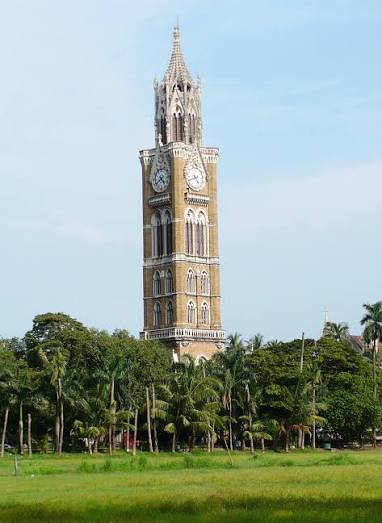
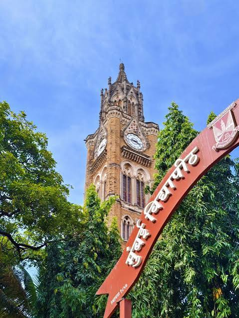
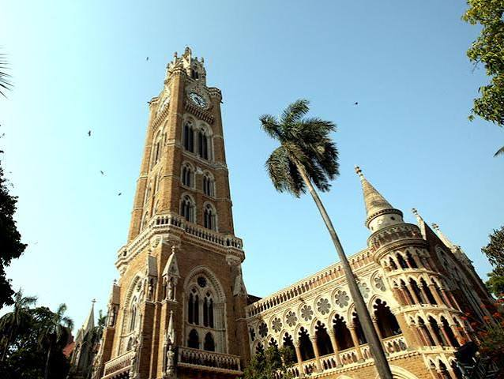

STYLE
Victorian Gothic
The tower reflects the Victorian Gothic architectural style popular in Mumbai during the nineteenth century.

HERITAGE / 04
A landmark of Victorian Gothic architecture rising above the historic heart of Mumbai.
SCROLL TO EXPLORE
01 / A MUMBAI LANDMARK
Rising above the Fort area, Rajabai Clock Tower is one of Mumbai's most recognisable historic architectural landmarks.
Built as part of the University of Bombay, the tower combines Victorian Gothic design with influences from Indian architecture.
02 / ARCHITECTURE
STYLE
The tower reflects the Victorian Gothic architectural style popular in Mumbai during the nineteenth century.
DESIGN
Its design incorporates elements inspired by traditional Indian architecture, creating a distinctive visual identity.
FEATURE
The tall clock tower became a prominent feature of the Mumbai skyline and remains visible from across the Fort area.
03 / HISTORY
The tower has stood as part of Mumbai's historic university precinct for more than a century.
1869
Construction of the Rajabai Clock Tower began in the nineteenth century as part of the developing University of Bombay.
1878
The tower was completed in 1878 and became an important architectural feature of the Fort area.
TODAY
Today, the tower remains an important part of Mumbai's historic skyline and university heritage.
A LANDMARK TAKES SHAPE
Completed in 1878, the Rajabai Clock Tower became an important part of the University of Bombay and the historic Fort precinct.
05 / VISUAL RECORD



CONTINUE EXPLORING
← BACK TO HERITAGE